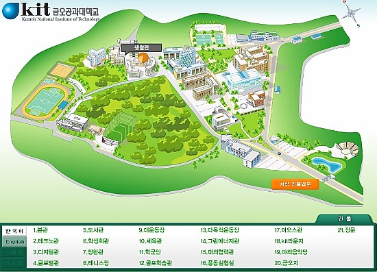

산책 조건
시간표를 등록하면 다음 수업과 남은 공강 시간을 자동으로 채워요.
다음 수업까지 남은 시간
현재 상황 금오공대 · 양호동
불러오는 중--°C
날씨 정보 불러오는 중…
---
야외 산책 적합도
-
- 체감
- -
- 강수
- -
- 바람
- -
- 습도
- -
- 미세먼지
- -
상황 시뮬레이터
날씨
계절
시간대
캠퍼스 사진 불러오는 중…
캠퍼스 지도

출발
경유 스팟
다음 수업
산책 동선(화살표=진행 방향)
마커를 누르면 실사 사진과 설명을 볼 수 있어요
좌표 보정 모드(개발용) — 마커(또는 교차점)를 누르고 지도 위 원하는 위치를 누르면 이동합니다. 보정값은 이 브라우저에 저장되며 거리 계산에도 반영됩니다.
커서: - · 선택: 없음
추천 코스 TOP 3
수업 추가
테스트 시각
시연용으로 앱의 '현재 시각'을 바꿀 수 있어요. 계절·시간대 자동 판별과 시간표 계산에 함께 반영되며, 설정 후에도 시계는 계속 흐릅니다.